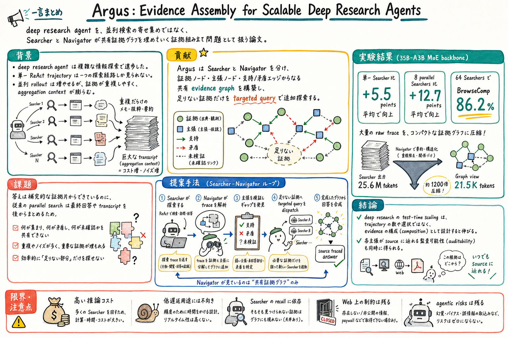

第一の貢献は、deep research の中間状態を transcript の束ではなく、証拠と主張の graph として表現したこと。

どんな論文か
Argus の出発点は、deep research agent の並列化がすぐ重複にぶつかることにある。単一 ReAct rollout は一つの探索経路しか見られない。だから複数 rollout を並列に走らせるが、答えに必要な証拠は補完的なピースでできているため、同じような証拠ばかり集まると伸びが止まる。
この論文は、deep research を『たくさん答えさせて後で選ぶ』問題ではなく、『足りない証拠片を見つけて埋める』問題として捉え直す。Searcher は Web 検索やページ訪問を行う標準的な ReAct agent のままにし、Navigator がその trace を証拠と主張に分解して共有グラフへ載せる。
証拠グラフには、証拠ノード、主張ノード、支持または矛盾のエッジがある。Navigator は graph 全体を見て、未検証の主張、矛盾した主張、まだ扱われていない sub-question を検出し、それぞれに targeted query を作って Searcher を追加派遣する。
最終回答を作る段階では、Navigator は生の transcript 全部を読み直さない。完成した証拠グラフだけを読み、各主張がどの evidence node と source URL に支えられているかを辿れる形で答える。この構造が、文脈爆発を抑えつつ並列探索を伸ばす鍵になっている。
実験では、35B-A3B MoE backbone で、単一 Searcher に比べて平均 +5.5 points、8 parallel Searchers で +12.7 points 改善した。64 Searchers では BrowseComp 86.2% に到達し、25.6M tokens の Searcher 出力を 21.5K token graph view に圧縮している。
Argus は、deep research agent の test-time scaling を、trajectory selection ではなく evidence composition として設計する論文である。
従来の parallel search は、複数の agent が独立に探索し、最後に多数決、best-of-N、LLM aggregation でまとめる。だが、複雑な調査では、同じ証拠を複数回拾うより、未確認の論点を埋める方が重要になる。
Argus は、Searcher と Navigator を分ける。Searcher は一つの query に対して ReAct rollout を行い、Navigator はそれらの trace を共有証拠グラフへ変換し、足りない証拠を取りに行く。
課題と貢献
第二の貢献は、Navigator が未検証、矛盾、未回答部分を graph-level に検出し、targeted query として Searcher を dispatch する verify-and-dispatch loop を作ったこと。
第三の貢献は、Navigator の学習に contrastive reward を入れ、検証後の graph が検証前より答えを良くしたかを報酬へ反映したこと。
第四の貢献は、単一 Searcher で訓練した Navigator が、推論時には複数 Searcher の並列構成へ再訓練なしで転移することを示したこと。
第五の貢献は、25.6M tokens の raw Searcher output を 21.5K token graph view に圧縮し、Navigator の文脈を Searcher 数から切り離したこと。
手法のしくみ
1
Searcher は状態を持たない agent で、SEARCH、VISIT、ANSWER の行動を使い、思考、行動、観測からなる ReAct trajectory を返す。Searcher 同士は通信せず、証拠グラフも見ない。
2
Navigator は evidence node、claim node、support / contradict edge からなる有向非巡回グラフを維持する。各 evidence node は source URL に紐づき、claim node は証拠または別の主張から支持・矛盾される。
3
Navigator は返ってきた trace を読み、証拠と主張を graph に追加する。さらに各 claim を supported、contradicted、unverified として判定する。この判定は固定ルールではなく、Navigator の policy が source diversity や矛盾を見て行う。
4
未検証の主張には独立した裏取り、矛盾した主張には権威ある解決、まだ触れていない質問部分には直接探索の query を生成する。これらを batch として Searcher に投げる。
5
構築が終わると、Navigator は loop 中の作業文脈を捨て、元の質問と完成した graph だけで最終回答を合成する。これにより、回答の各主張は source URL へ戻れる。
検証結果
8つの複雑な情報探索ベンチマークで評価され、Argus-Parallel は BrowseComp-ZH、GAIA、Seal-0、xbench-DeepSearch-2510、FrontierScience Olympiad の5つで最先端を達成した。
Argus-Solo は raw Searcher より平均 +5.5 points 改善し、Argus-Parallel は 8 parallel Searchers で平均 +12.7 points 改善した。これは単純な並列サンプル平均ではなく、Navigator の compositional verification が効いていることを示す。
BrowseComp では、Searcher の累積 token を増やすと accuracy が 55.0% から 86.2% まで伸びた。一方で Navigator が読む graph view は最大 21.5K tokens に抑えられた。
graph representation の ablation では、text only より bare graph が +2.7 points、さらに support / contradict label と verification status を持つ Full DAG が +2.5 points 改善した。
別の Searcher backbone に差し替えても Navigator の効果は残り、DeepSeek や Seed-2.0-Pro を Searcher にした場合でも Argus-Parallel が最も高い BrowseComp accuracy を示した。
限界と読みどころ
Argus は heavy duty research solver であり、低コスト・低遅延の assistant ではない。64 Searchers では1問あたり Searcher token が 25.6M に達する。
Searcher が見つけられない情報、paywall の背後にある情報、Web に存在しない情報には届かない。Argus は証拠を組み立てる仕組みであり、Searcher の recall ceiling を消すものではない。
source tracing は監査可能性を高めるが、誤情報、著作権、agentic search 一般のリスクは残る。
比較には公式報告値や再現実験の混在があるため、完全に同一条件の横比較として読むには注意がいる。
読みながら見る図表や節
- Figure 1 は、単独 Searcher、Searcher + Navigator、parallel Searchers + Navigator の3モードを示す。見るべき点は、Navigator が linear trace を DAG に変換し、未充足部分へ探索を差し向けるところ。
- Figure 2 は、BrowseComp 風の質問で証拠をジグソーパズルのように組み立てる例。採用する証拠、捨てる探索、家族名へつながる lineage が一枚の evidence board に載る。
- Figure 3 は GRPO training pipeline。検証後 graph での回答と検証前 graph での回答を比べ、検証が答えを改善した分を報酬へ入れている。
- Figure 4 は BrowseComp accuracy と Searcher token budget の関係。Searcher output は巨大化するが、Navigator context は compact graph view に抑えられる。
- Table 3 は graph 表現の ablation。単なる text concatenation ではなく、graph topology、support / contradict label、verification status が性能に効く。
次に読むなら
- Direct Corpus Interaction と並べると、corpus を歩く探索から、複数探索の証拠を組み立てる段階へ進める。
- Is Grep All You Need? と並べると、検索手法だけでなく、harness が search result をどう持ち、どう次の行動に変えるかが見える。
- Why Neighborhoods Matter と並べると、最後に引用された source だけでなく、探索経路や未引用ノードを含めた provenance の話へつながる。
- paper.json と並べると、論文自体を agent-readable にし、Argus 型の evidence assembly に渡しやすくする方向が見える。
読後Q&A
Argus は普通の並列検索と何が違う？
普通の並列検索は、複数の最終回答や transcript を後から集約する。Argus は途中で証拠グラフを作り、足りない証拠や矛盾を見つけて、次の探索をそこへ向ける。中心は answer aggregation ではなく evidence composition。
Searcher と Navigator の役割は？
Searcher は一つの query を受けて ReAct 形式で検索・訪問・回答を行う。Navigator は複数 Searcher の trace を証拠グラフへ変換し、未検証や矛盾を見つけて追加探索を指示し、最後に graph から回答を作る。
なぜ context が小さくなる？
Navigator がすべての raw transcript を読むのではなく、証拠グラフという圧縮表現を読むから。論文では 25.6M tokens の Searcher 出力を 21.5K tokens の graph view に圧縮している。
Navigator はどう学習する？
SFT で graph construction と synthesis の形式を warm-start し、その後 GRPO で訓練する。報酬には、検証後の graph での回答が検証前の graph よりどれだけ良くなったかを入れている。
実務でそのまま使える？
そのまま使うには重い。ただし、論文調査、記事作成、勉強会準備を『証拠グラフの未充足部分を埋める作業』として設計する考え方はすぐ使える。
一番見るべき結果は？
BrowseComp 86.2% も目立つが、より重要なのは graph ablation。text only より graph、graph より支持/矛盾ラベルと検証状態つき Full DAG が効いている点。
弱点は？
高コストで低遅延用途には向かない。Searcher が見つけられない情報には届かない。source tracing は助けになるが、誤情報や著作権など agentic search 一般のリスクは残る。
一言でいうと？
deep research は、たくさん答えを出して選ぶより、足りない証拠を見つけて埋める方が伸びる、という論文。